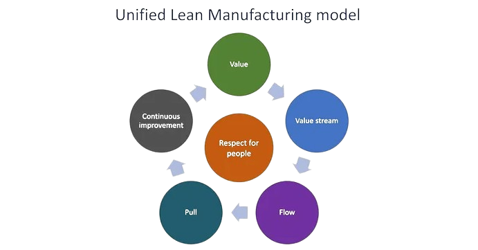

Lean-arendusmetoodika on tarkvaraarenduse raamistik, mis on inspireeritud Lean-tootmisest ja Toyota tootmissüsteemist.
Selle eesmärk on maksimeerida väärtust minimeerides raiskamist, kõrvaldades üleliigsed protsessid ja keskendudes klientide vajadustele.
Lean hõlmab endas pidevat täiustamist ja protsessi optimeerimist.

1. Väärtus kliendile
Rõhutab tegevusi, mis loovad otsest väärtust kliendile.
Võib nõuda põhjalikku muutust ettevõtte kultuuris.
2. Väärtusvoog
Optimeerib väärtuse liikumist tootmisest tarbijani.
Võib olla keeruline keeruliste tootmisahelate korral.
3. Tõmbepõhimõte
Töö käib vastavalt klientide nõudlusele.
Eeldab täpseid prognoose ja hea kommunikatsiooni tarnijatega.
4. Keskendu
Keskendub vaid vajalikele protsessidele ja tegevustele.
Nõuab selget arusaamist väärtusest kliendile.
5. Pidev täiustamine
Pidev protsessi ja tegevuste optimeerimine.
Võib nõuda muutusi organisatsiooni kultuuris ja töötajate mõtteviisis.